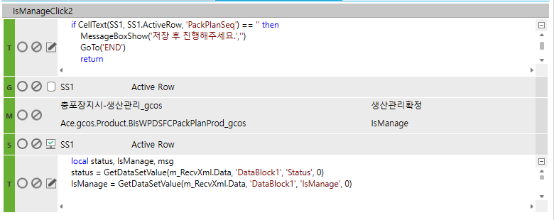

체크박스 클릭하여 UPDATE 처리
FrmWPDSFCPackPlan_gcos
충포장지시입력_gcos
if CellText(SS1, SS1.ActiveRow, 'PackPlanSeq') == '' then
MessageBoxShow('저장 후 진행해주세요.','')
GoTo('END')
return
end

local status, IsManage, msg
status = GetDataSetValue(m_RecvXml.Data, 'DataBlock1', 'Status', 0)
IsManage = GetDataSetValue(m_RecvXml.Data, 'DataBlock1', 'IsManage', 0)
if status ~= '0' then
if IsManage == '1' then
SetText(SS1, SS1.ActiveRow, 'IsManage' ,'0')
else
SetText(SS1, SS1.ActiveRow, 'IsManage', '1')
end
msg = GetDataSetValue(m_RecvXml.Data, 'DataBlock1', 'Result', 0)
else
if IsManage == '1' then -- 확정되었습니다.
msg = GetMessage('2152', '', '', '', '', '', '', '', '', '', '' )
else -- 취소되었습니다.
msg = GetMessage('1136', '', '', '', '', '', '', '', '', '', '' )
end
end
MessageBoxShow(msg, '')
CREATE PROC gcos_SWPDSFCPackPlanIsManage
@ServiceSeq INT = 0,
@WorkingTag NVARCHAR(10)= '',
@CompanySeq INT = 1,
@LanguageSeq INT = 1,
@UserSeq INT = 0,
@PgmSeq INT = 0,
@IsTransaction BIT = 0
AS
UPDATE C
SET IsManage = CASE WHEN ISNULL(A.IsManage, '') = '1' THEN '1' ELSE '0' END
FROM #BIZ_OUT_DataBlock1 AS A JOIN gcos_TPDSFCPackPlan AS C WITH(NOLOCK) ON C.CompanySeq = @CompanySeq
AND C.PackPlanSeq = A.PackPlanSeq
WHERE A.Status = 0
UPDATE A
SET IsManage = C.IsManage
FROM #BIZ_OUT_DataBlock1 AS A JOIN gcos_TPDSFCPackPlan AS C WITH(NOLOCK) ON C.CompanySeq = @CompanySeq
AND C.PackPlanSeq = A.PackPlanSeq
WHERE A.Status = 0
RETURN
-- gcos_TPDSFCPackPlan